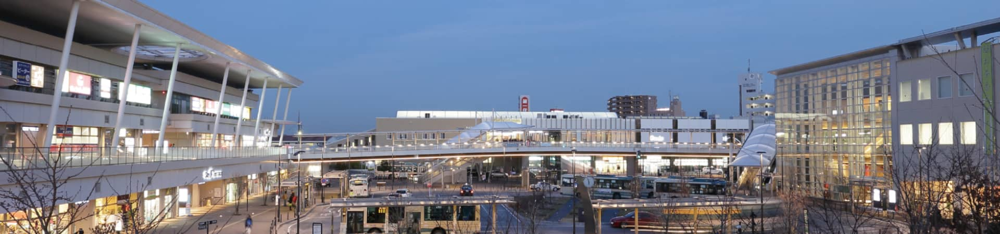
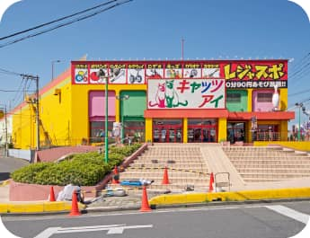
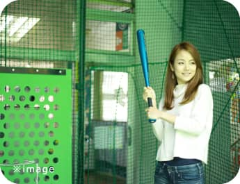
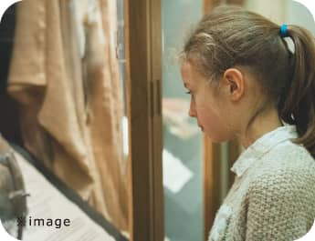
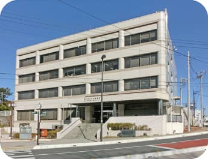
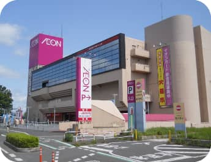

Living
ほどよい自然と、
ほどよい利便の調和する街
都会過ぎず、田舎過ぎず。
再開発によって、近代的な洗練された雰囲気を醸す駅周辺のエリアと、
心やすらぐ自然環境が調和する、東京郊外ならではの暮らしやすい街。
都心まで1時間もかからず、通勤・通学・お出かけにも便利。
イオンなど日々の生活を支える大型商業施設も点在し、
それでいて、智光山公園をはじめとする自然のやすらぎを身近に感じることができる。
新型コロナウイルスの拡大により、
外に出られる機会が少なくなってしまったお子様たちが、
のびのびと、近場で羽を伸ばして、すこやかに育つことができます。
狭山市駅
新宿まで特急38分で行ける西武新宿線「狭山市」駅。複合しているショッピングモール「エミオ」は、食料品の揃うスーパーマーケットやスイーツ・惣菜店、通勤時や日常の生活に便利なドラッグストアやコンビニエンスストア、気軽に立ち寄れるカフェやベーカリー、ほかにもファッション雑貨・書店などが揃い、市民の日常生活を支えています。
○内の数字は狭山市駅・稲荷山公園駅からの日常平常時の所要時間です。乗換、待ち時間は含まれません。※飯能駅、練馬駅、池袋駅へは稲荷山公園駅より西武池袋線の利用となります。※練馬駅へは、小手指駅でFライナーに乗り換えた数値を記載しています。※六本木駅へは、練馬駅より都営大江戸線の利用となります。※御茶ノ水駅、大手町駅、東京駅へは、池袋駅より東京メトロ丸ノ内線の利用となります。※有楽町駅へは、池袋駅より東京メトロ有楽町線の利用となります。※本川越駅、所沢駅、西武新宿駅へは、狭山市駅より西武新宿線の利用となります。※新宿駅へは、高田馬場駅よりJR山手線の利用となります。※国分寺駅へは、東村山駅より西武国分寺線の利用となります。※渋谷駅、横浜駅へは、所沢駅よりFライナー（元町・中華街行）に乗り換えた場合の数値を記載しています。※大崎駅へは、池袋駅より湘南新宿線の利用となります。※九段下駅、市ヶ谷駅へは、高田馬場駅より東京メトロ東西線の利用となります。※市ヶ谷駅、六本木駅、横浜駅へは、西武新宿駅より徒歩で新宿駅へ移動しています。（所要時間9分）※東京駅へは、池袋駅より東京メトロ丸ノ内線の利用となります。また、有楽町駅へは東京メトロ有楽町線の利用、渋谷駅、大崎駅へは、高田馬場駅よりJR山手線の利用、横浜駅へは新宿駅より湘南新宿線を利用となります。
智光山公園
東京ドーム約11個分の広大な面積を誇る総合公園。アスレチック、こども動物園などお子様が楽しめるアミューズメント施設から、植物園や釣り場など大人も楽しめる様々なエリアがあります。
屋内のスポット
雨の日でも楽しめる！屋内の娯楽・商業施設も充実しています。
-
狭山ベリーランド
関東最大規模、80,000㎡のベリー農園。観光農園としての果実狩りは、いちご狩り・ブルーベリー狩り・しいたけ狩りをそれぞれシーズン中に体験できます。
- 
キャッツアイ＆レジャスポ狭山店
地元の子どもたちに愛され続けるアミューズメント施設。中は広く、かなりの時間遊び続けることができます。フードコートのラーメンもおすすめ！
- 
狭山スポーツセンター
野球・ソフトボールのバッティングコーナーから守備練習や投球練習、オートテニスなどの設備もそなえた、老若男女が楽しめる施設。
- 
狭山市立博物館
「入間川と入間路－その自然と風土－」を基本テーマとしてそこで育まれ生活と文化を築いた人々の足跡にスポットを当てた常設展示。年に4回特別展示が開催され、昨年夏の恐竜展は子どもたちに大人気でした。
- 
狭山市立中央図書館
狭山市駅から徒歩3分の位置にある便利な図書館。コロナウイルス感染対策も万全で安心。小児向けの本を集めた専用スペースが広く、週末には子ども向けの上映会なども開催されています。
- 
イオン狭山店
地域の方々の暮らしを支える大型商業施設。店内は広く、品揃えも豊富で、連日多くの方が訪れます。
Interview
■グランシア狭山を購入した方々にインタビュー！
■狭山市で活躍する方々にインタビュー！